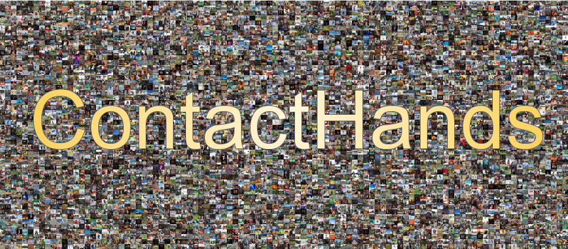
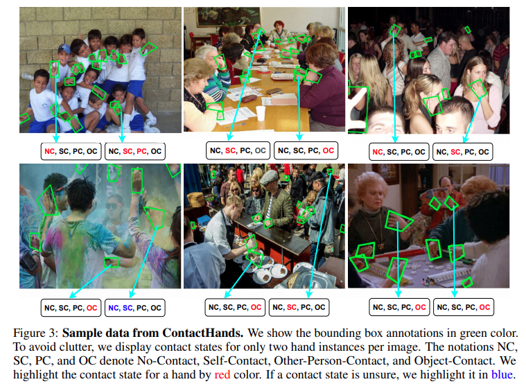

ContactHandsA large-scale dataset of in-the-wild images for hand detection and contact recognition. Supreeth Narasimhaswamy1, Trung Nguyen2, Minh Hoai1,2
1Stony Brook University, Stony Brook, NY 11790, USA

We collect a large-scale dataset of unconstrained images and annotate hand locations and their contact states.
 Download
[Download link]
Copyright
The documents contained in these directories are included by the contributing authors as a means to ensure timely dissemination of scholarly and technical work on a non-commercial basis. Copyright and all rights therein are maintained by the authors or by other copyright holders, notwithstanding that they have offered their works here electronically. It is understood that all persons copying this information will adhere to the terms and constraints invoked by each author's copyright. These works may not be reposted without the explicit permission of the copyright holder.
|